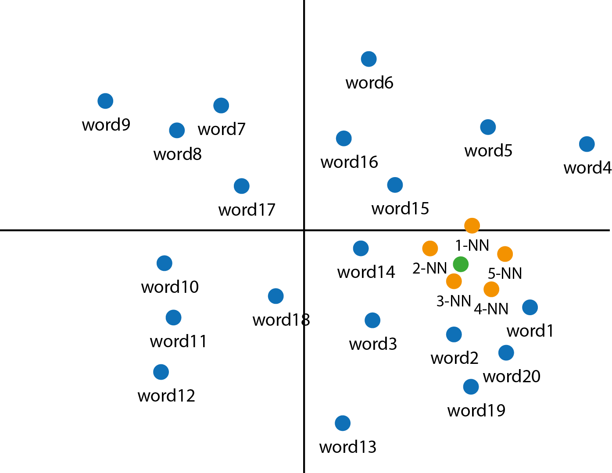
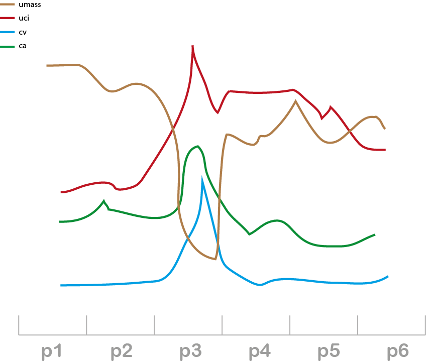
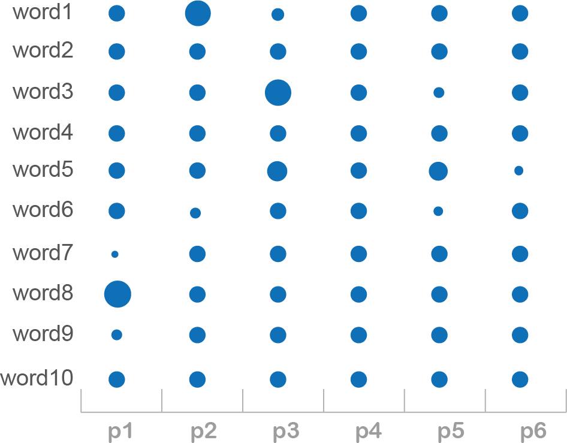
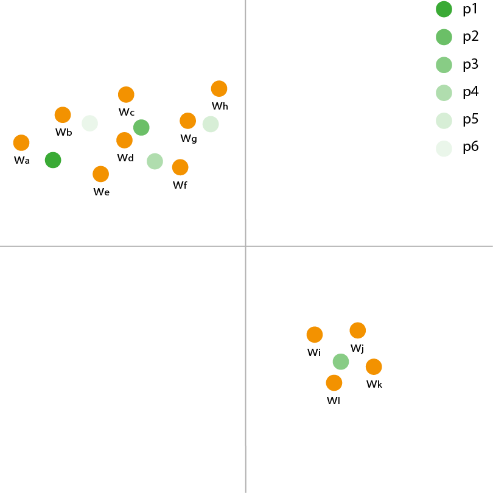

Topic coherence
Coherence umass : 0.38
Coherence uci : 0.2
Coherence c_v : 0.2
Coherence c_a : 0.38
Coherence npmi : 0.2
Coherence dist_background : 0.2
Coherence temp_entropy: 0.31
Topic topic 0 seems {not, normally, strongly} coherent.
See on the right-side figure how well those measure correlates.
Embedding

Topic words (blue), their weighted barycentre (green) and the 5-nearest neighbor of the barycentre (orange).
Coherence evolution

Coherence evolution per period.
Pulse

Influence of words on the topic per period.
Trajectory

Topic weighted barycentre trajectory in embedding space and its kNN for each period.